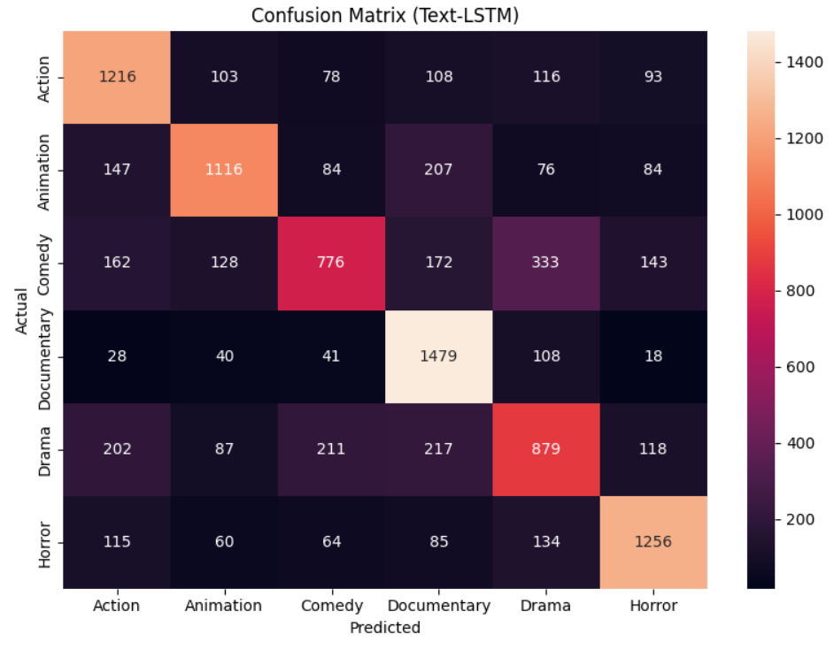
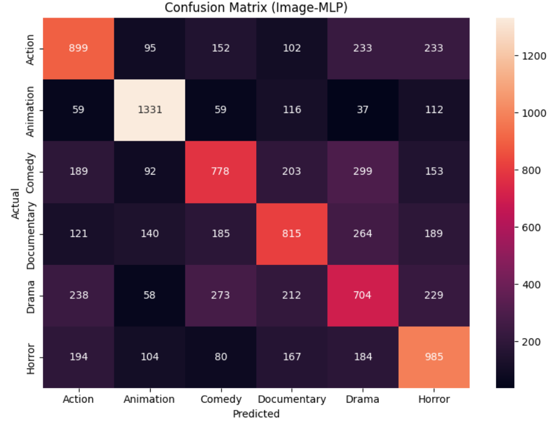
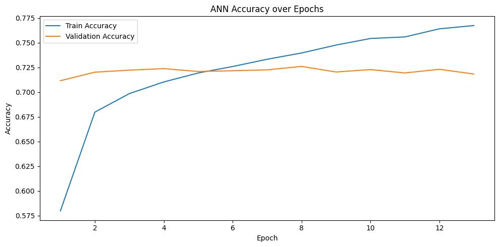
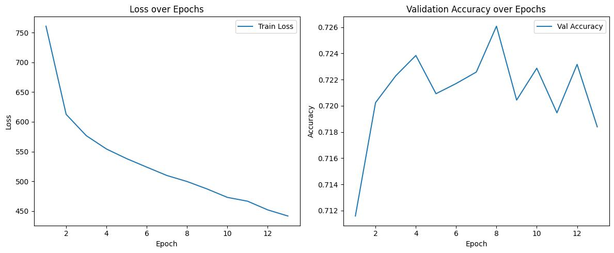
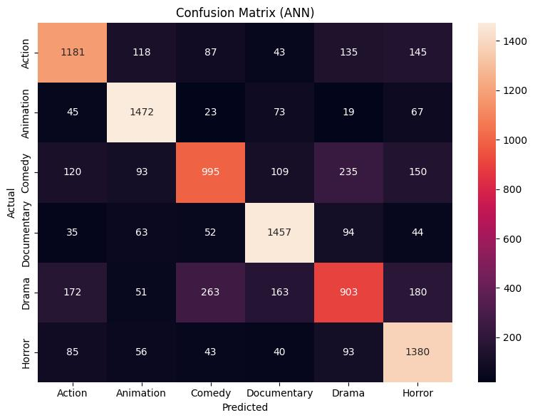

Combining Text and Image Data for Movie Genre Prediction
Motivation: Multi-modal genre classification enhances movie recommendation systems by leveraging both textual (e.g., plot summaries) and visual (e.g., posters) data, capturing nuanced genre cues that single-modality models miss.
Goals: Our project aims to develop a model that accurately predicts movie genres using fused text and image data, demonstrating superior performance over text-only or image-only models, and to provide a reproducible pipeline for future research.
Source: We sourced movie data from the TMDb API, collecting metadata (plot summaries, genres) and poster URLs. Additional horror genre data was fetched to balance the dataset, focusing on movies from 1965 to 1984 to ensure colored posters.
Overview: Initially, we collected 103,212 movies across 19 genres. The genre distribution was imbalanced, with Drama (16,724), Documentary (12,428), and Comedy (11,384) dominating, while genres like Western (199) and War (370) were underrepresented. The dataset includes features: movie ID, title, overview (text), poster URL (image), and primary genre. No duplicate records were found in the dataset.
Cleaning and Preparation:
def cleanText(text: str):
translator = str.maketrans('', '', string.punctuation)
text = text.translate(translator).lower()
tokens = nltk.word_tokenize(text)
tokens = [lemmatizer.lemmatize(token) for token in tokens if token not in stop_words]
return ' '.join(tokens)Text Analysis: The distribution of token counts in cleaned descriptions peaks around 25–50 tokens, with a long tail up to 175 tokens, indicating varied summary lengths.
Data Split: The dataset was split into 80% training and 20% test sets using stratified sampling to maintain genre balance.
Code Reference: See our data preprocessing scripts (Data_Pre_processing_1.ipynb for initial fetching, Data_Pre_processing_2.ipynb for horror data) and cleaning notebook (IMDB_Genre_Prediction_Final.ipynb).
Methodology: Text data, processed as embeddings (made using pre-trained model "mixedbread-ai/mxbai-embed-large-v1"), was fed into a Text-only LSTM classifier. The LSTM architecture consists of 2 layers with 256 hidden units, a dropout rate of 0.3, and a final linear layer for classification across 6 genres. The model was trained for 15 epochs with a batch size of 128, a learning rate of 1e-3, and the AdamW optimizer, using CrossEntropyLoss. The dataset was split into 80% training and 20% validation sets using stratified sampling.
Results & Evaluation: The Text-only LSTM model achieved the following performance on the validation set:
| Genre | Precision | Recall | F1-Score | Support |
|---|---|---|---|---|
| Action | 0.71 | 0.65 | 0.68 | 1714 |
| Animation | 0.72 | 0.67 | 0.70 | 1714 |
| Comedy | 0.59 | 0.52 | 0.56 | 1714 |
| Documentary | 0.65 | 0.89 | 0.75 | 1714 |
| Drama | 0.54 | 0.47 | 0.50 | 1714 |
| Horror | 0.71 | 0.75 | 0.73 | 1714 |
| Macro Avg | 0.66 | 0.66 | 0.65 | 10284 |
| Weighted Avg | 0.66 | 0.66 | 0.65 | 10284 |
Accuracy: 66%
Confusion Matrix:The Text-LSTM model achieves its strongest results in the Documentary category with 1,479 correct classifications and in Horror with 1,256, while also exceeding 1,200 true positives for Action (1,216) and surpassing 1,100 for Animation (1,116). Its primary weaknesses lie in distinguishing Comedy (776) from Drama (879), as evidenced by 333 Comedy samples misclassified as Drama and 172 Drama samples misclassified as Comedy. Smaller misallocations occur—207 Animation titles labeled as Documentary and 147 actual Animations called Action—yet overall the text-based architecture delivers a balanced performance across genres.
Methodology: Image data, processed as embeddings (made from the pre-trained model ResNet-50), was fed into an Image-only Multi-Layer Perceptron classifier. The MLP architecture consists of three linear layers (input → 512 → 256 → 6 classes) with ReLU activations and dropout rates of 0.4 and 0.3 between layers, respectively. The model was trained for 20 epochs with a batch size of 256, a learning rate of 1e-3, and the AdamW optimizer, using CrossEntropyLoss. The dataset was split into 80% training and 20% validation sets using stratified sampling.
Training Progress: Validation accuracy decreased over epochs: 56.27% at epoch 5, 55.38% at epoch 10, 54.33% at epoch 15, and 53.79% at epoch 20, suggesting potential overfitting or insufficient regularization.
Results & Evaluation: The Image-only MLP model achieved the following performance on the validation set:
| Genre | Precision | Recall | F1-Score | Support |
|---|---|---|---|---|
| Action | 0.55 | 0.52 | 0.53 | 1714 |
| Animation | 0.72 | 0.78 | 0.75 | 1714 |
| Comedy | 0.53 | 0.43 | 0.47 | 1714 |
| Documentary | 0.50 | 0.51 | 0.50 | 1714 |
| Drama | 0.41 | 0.45 | 0.43 | 1714 |
| Horror | 0.52 | 0.55 | 0.54 | 1714 |
| Macro Avg | 0.54 | 0.54 | 0.54 | 10284 |
| Weighted Avg | 0.54 | 0.54 | 0.54 | 10284 |
Accuracy: 53.79%
Confusion Matrix: The Image-MLP model, by contrast, excels in Animation with 1,331 correct predictions, outperforming its own Documentary (815), Action (899), Comedy (778), Drama (704), and Horror (985) counts. However, this gain is offset by notable class confusions: 273 actual Dramas predicted as Comedy, 238 Action clips misclassified as Drama, and 233 Action items labeled as Horror. While the image-driven MLP demonstrates a clear advantage in the Animation domain, its performance on other genres is less uniform compared to the more consistent Text-LSTM results.
Methodology: The fusion model combines text and image embeddings, processed through a multi-layer neural network (GenreClassifier). The architecture includes four linear layers (input → 256 → 128 → 64 → 32 → 6 classes) with ReLU activations, batch normalization, and dropout rates of 0.5, 0.5, 0.5, and 0.3, respectively. The model was trained for up to 50 epochs with a batch size of 64, a learning rate of 0.001, and the Adam optimizer with weight decay (1e-4), using NLLLoss. Early stopping was applied with a patience of 5 epochs, triggered when validation accuracy plateaued. The dataset was split into 80% training and 20% test sets using stratified sampling.
Training Output:
Epoch 1 | Loss: 760.7444 | Train Acc: 0.5798 | Val Acc: 0.7116
Epoch 2 | Loss: 612.5182 | Train Acc: 0.6798 | Val Acc: 0.7202
Epoch 3 | Loss: 576.6483 | Train Acc: 0.6985 | Val Acc: 0.7223
Epoch 4 | Loss: 554.3013 | Train Acc: 0.7104 | Val Acc: 0.7238
Epoch 5 | Loss: 538.1142 | Train Acc: 0.7194 | Val Acc: 0.7209
Epoch 6 | Loss: 523.7954 | Train Acc: 0.7260 | Val Acc: 0.7217
Epoch 7 | Loss: 509.7205 | Train Acc: 0.7333 | Val Acc: 0.7226
Epoch 8 | Loss: 499.6237 | Train Acc: 0.7397 | Val Acc: 0.7261
Epoch 9 | Loss: 487.0057 | Train Acc: 0.7477 | Val Acc: 0.7204
Epoch 10 | Loss: 472.9467 | Train Acc: 0.7544 | Val Acc: 0.7229
Epoch 11 | Loss: 466.5673 | Train Acc: 0.7560 | Val Acc: 0.7195
Epoch 12 | Loss: 451.9335 | Train Acc: 0.7641 | Val Acc: 0.7232
Epoch 13 | Loss: 441.6626 | Train Acc: 0.7675 | Val Acc: 0.7184
⏹ Early stopping triggered.Results & Evaluation: In just over 12 epochs, the model’s accuracy climbs steadily from around 58 % to 77 %. The validation accuracy, however, jumps early to roughly 72–73 % by epoch 4 and then flattens out. That leveling-off tells us the model isn’t really learning new patterns that generalize beyond the training data. The widening gap between rising training accuracy and stagnant validation performance is a clear sign we’re starting to overfit and won’t gain much by simply training longer.
Training Visualization:
 Confusion Matrix: A detailed confusion matrix is attached in Result and Evaluation section, showing misclassifications.
Text Processing: Text data, processed as embeddings (made using pre-trained model "mixedbread-ai/mxbai-embed-large-v1"), was fed into a Text-only LSTM classifier. The LSTM architecture consists of 2 layers with 256 hidden units, a dropout rate of 0.3, and a final linear layer for classification across 6 genres. The model was trained for 15 epochs with a batch size of 128, a learning rate of 1e-3, and the AdamW optimizer, using CrossEntropyLoss. The dataset was split into 80% training and 20% validation sets using stratified sampling.
Image Processing: Image data, processed as embeddings (made from the pre-trained model ResNet-50), was fed into an Image-only MLP classifier. The MLP architecture consists of three linear layers (input → 512 → 256 → 6 classes) with ReLU activations and dropout rates of 0.4 and 0.3 between layers, respectively. The model was trained for 20 epochs with a batch size of 256, a learning rate of 1e-3, and the AdamW optimizer, using CrossEntropyLoss. The dataset was split into 80% training and 20% validation sets using stratified sampling.
Fusion Technique: Text and image embeddings were concatenated and passed through a four-layer ANN (GenreClassifier) with ReLU activations, batch normalization, and dropout rates of 0.5, 0.5, 0.5, and 0.3, respectively. The ANN architecture consists of layers: input → 256 → 128 → 64 → 32 → 6 classes. The model was trained using the Adam optimizer with weight decay (1e-4).
Hyperparameters: ANN: LR=0.001, batch size=64, dropout=0.5/0.5/0.5/0.3, trained for up to 50 epochs with early stopping (patience=5).
| Model | Accuracy | F1-Score (Macro Avg) |
|---|---|---|
| Text-only (LSTM) | 66% | 0.65 |
| Image-only (MLP) | 53.79% | 0.54 |
| Fusion Model (ANN) | 72.32% | 0.82 |
Comparisons: The fused model outperforms single-modal models, as shown above.
Error Analysis: The confusion matrix shows strong performance for Animation and Horror, while Drama has the highest misclassification, often confused with Comedy and Documentary. Action is frequently mistaken for Horror and Drama, likely due to overlapping themes. Comedy also suffers from confusion with Drama and Horror. Overall, genre blending affects classification accuracy, especially for Drama.
Code: Available at github.com/iamfaham/movies-genre-classification.
Setup: Download the IMDB_Genre_Prediction_Final.ipynb file and tmdb_movies_combined.zip (unzip this) file. Key dependencies include pandas, transformers, seaborn, imblearn, tqdm, nltk, sentence_transformers, and torch. The experiments were conducted on an RTX 4090 via vast.ai, with 24 GB GPU RAM, CUDA version 12.7, 64 CPU cores, 129 GB system RAM, and 16 GB disk capacity. Run the notebook after unzipping the dataset file.
Anjaneya Bhardwaj: Data Specialist, Website design Lead
Syed Mohammed Faham: Text Modelling Lead, Fusion Modelling Lead
Hemanth Poondla: Image Modelling Lead
Findings: Our fused model confirms the value of multi-modal learning for movies genre classification.
Future Work: Experiment with Vision Transformers (ViT).